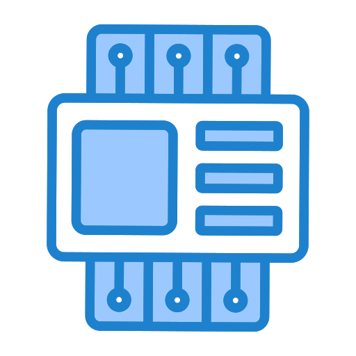

Tantárgy bemutató

A PLC programozás alapjai tantárgy célja, hogy a hallgatók megismerjék az ipari automatizálás egyik legfontosabb eszközének, a programozható logikai vezérlőnek (PLC) a működését és programozását. A tantárgy bemutatja a PLC-k felépítését, működési elvét, valamint azt, hogyan használhatók különböző ipari folyamatok vezérlésére és felügyeletére.
A kurzus során a hallgatók megismerkednek a PLC hardverelemeivel, például a bemeneti és kimeneti modulokkal, a központi feldolgozó egységgel (CPU), valamint a kommunikációs interfészekkel. Emellett elsajátítják az alapvető programozási módszereket és nyelveket, például a létra-diagramot (Ladder Diagram), amely az egyik leggyakrabban alkalmazott PLC programozási forma.
A tantárgy gyakorlati jellegű is: a hallgatók egyszerű vezérlési feladatokat oldanak meg PLC segítségével, például motorok indítását, szenzorok jeleinek feldolgozását vagy különböző automatizált folyamatok vezérlését. A kurzus végére a hallgatók képesek lesznek alapvető PLC programok tervezésére, megírására és tesztelésére, ami fontos alapot jelent az ipari automatizálás területén.